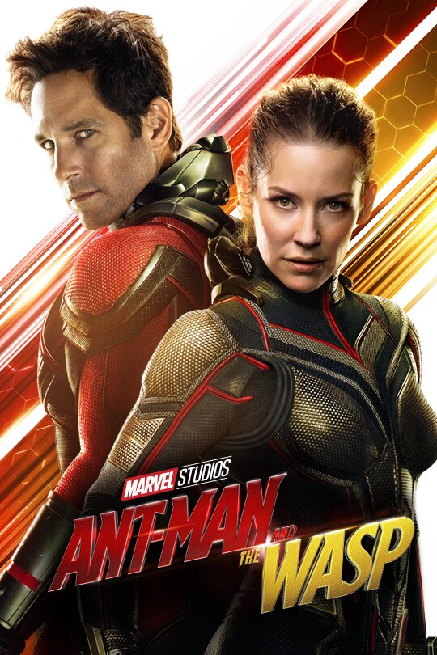

Captain Marvel is a American superhero film based on Marvel Comics featuring the character Carol Danvers / Captain Marvel.
Doctor Strange is a American superhero film based on the Marvel Comics character of the same name.

Ant-Man and the Wasp: Quantumania is a American superhero film based on Marvel Comics featuring the characters Scott Lang / Ant-Man and Hope Pym / Wasp.